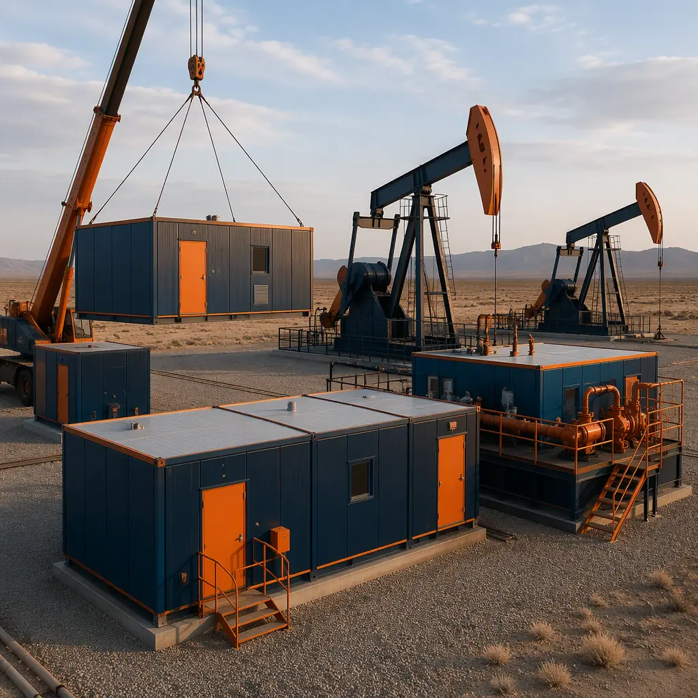
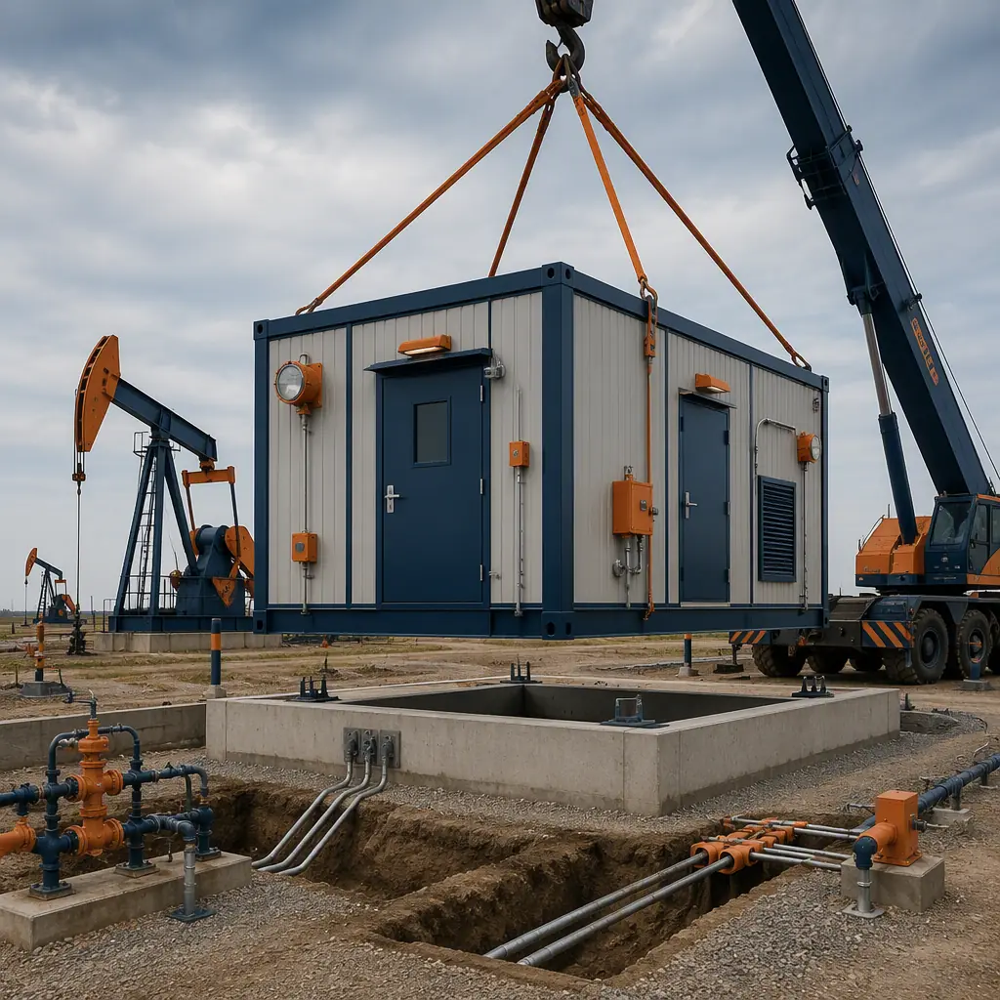
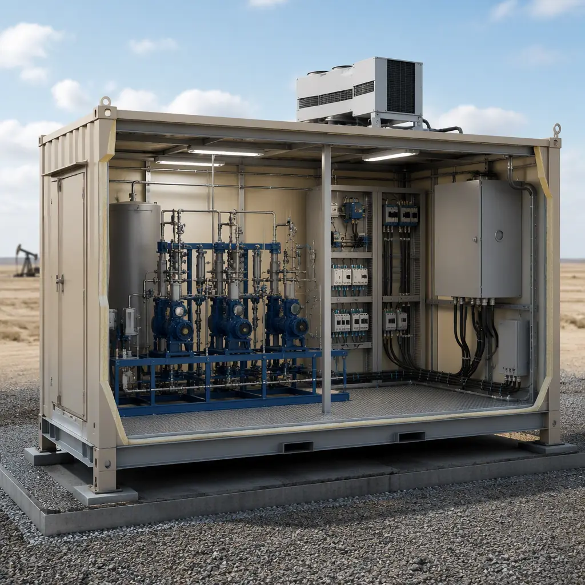
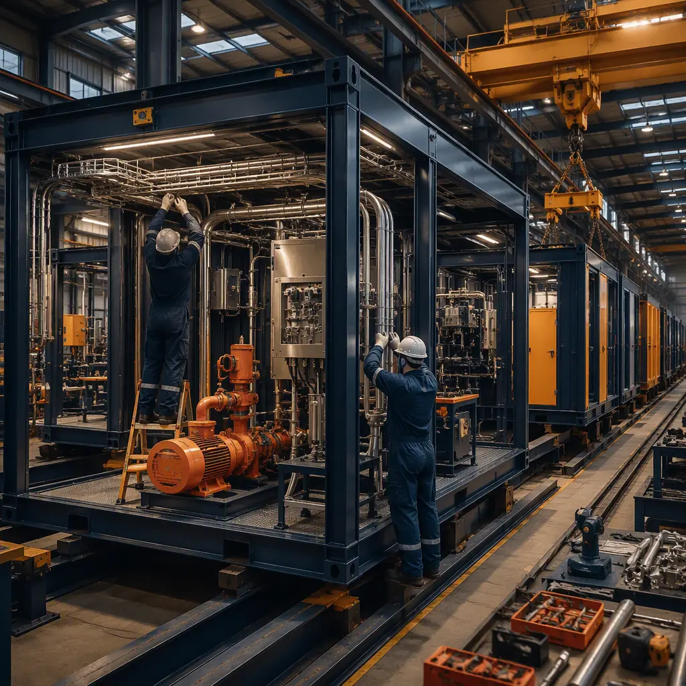

Oil and gas operators face a structural problem that conventional construction cannot solve: the average US shale well pad requires 12–18 months from lease signing to first production, and 30–40% of that schedule is consumed by site-built equipment shelters, control rooms, pump station buildings, and crew support structures. The US Energy Information Administration reported 118,000 active oil and gas wells in the Permian Basin alone in 2025, with operators drilling more than 10,000 new wells per year across US unconventional plays. Every new well pad needs the same repetitive package of buildings — a wellhead equipment shelter, a pumpjack or ESP control building, a produced-water pump station, a chemical injection building, and an electrical distribution room — yet these structures are still conventionally framed on site in most basins, exposed to weather, remote-crew labor shortages, and the 35–45% productivity loss that is inherent to field construction. Modular prefabricated construction moves this entire building package into a factory: equipment shelters arrive with pre-installed skid-mounted pumps, instrument panels, and HVAC; control rooms arrive with pre-terminated SCADA wiring and fire suppression; pump stations arrive with pre-piped manifolds and motor control centers. For operators building 50–200 well pads per year, the schedule compression and repeatability economics are the same production-line logic that has already transformed heavy industrial facility construction in refining and petrochemical.

Why Conventional Oilfield Construction Fails the Schedule
Site-built oilfield buildings carry four cost and schedule penalties that modular delivery eliminates:
- Remote-site labor scarcity inflates both cost and duration. Oilfield construction crews in the Permian, Bakken, and Appalachian basins are typically sourced from regional population centers 100–300 miles away, with per-diem, lodging, and travel costs adding $18,000–25,000 per worker per month to project overhead. A conventional 20-module-equivalent well pad building package requires 8–12 field trades working 10–14 weeks on site. Factory production shifts that labor to a permanent manufacturing facility where a 40–60 person production team builds the same package in 6–8 weeks with 75–85% productive time instead of the 35–45% typical of remote field crews. This is the same labor-economics argument that drives modular camp construction for remote mining operations.
- Weather windows compress the effective construction season. In the Bakken, the construction season runs roughly April through October; in the Permian, summer heat above 100°F forces work-hour restrictions; in the Canadian oil sands, winter construction can add 3–5 months of schedule. Factory production is weather-independent — modules are fabricated, finished, and tested indoors year-round, then shipped to site for a 2–4 day setting and connection sequence. Operators planning 2026–2027 development programs can lock module production schedules before the weather-dependent site window even opens.
- Sequential trade dependencies create a single-threaded critical path. A conventional pump station building requires site grading, concrete slab, structural steel erection, building enclosure, then mechanical, electrical, and instrumentation fit-out — each phase gated on the previous one, with inspection hold points in between. Modular delivery runs the building shell, interior fit-out, and skid-mounted equipment installation concurrently in the factory while the site team prepares only the foundation and utility tie-ins. The result is a 14-week stick-built schedule compressed to 6–8 weeks of factory production plus 2–4 days of site setting.
- Field-fabricated electrical and instrumentation work is the highest-defect scope. Industry data from oilfield construction quality programs shows field-installed electrical terminations carry defect rates of 3–6% versus 0.5–1% for factory terminations, and instrument loop-check failures are 2–3 times more frequent when wiring is pulled and terminated on site. Factory-built control rooms and electrical buildings are fully terminated, labeled, and loop-checked before shipment — eliminating the punch-list rework that consumes 10–15% of field construction budgets. Factory quality control systems are detailed in our analysis of modular factory QC.


What Gets Factory-Built — The Oilfield Module Package
The modular oilfield building package divides into four functional module families, each manufactured to the same design standards that govern permanent energy facilities:
Well Pad Equipment and Chemical Injection Shelters
Every producing well requires chemical injection — corrosion inhibitor, scale inhibitor, biocide, and demulsifier, typically injected at 1–50 gallons per day per chemical through diaphragm or plunger metering pumps paced by wellhead flow. The injection shelter houses chemical totes (typically 275–330 gallon IBC containers), metering pumps, and containment with leak detection. A factory-built injection shelter arrives with pumps pre-mounted on the skid, piping pre-assembled and pressure-tested at 1.5× design pressure, containment curbs factory-applied, and wiring terminated to a local panel. On site, the crew connects chemical suction/return lines, power, and the SCADA network — typically a 2–3 day sequence versus 4–6 weeks for a stick-built equivalent. The same factory-precision approach applies to modular electrical substation buildings used across energy infrastructure.
Pump Station and Produced-Water Buildings
Produced-water handling is the highest-volume logistics problem in unconventional production: the Permian Basin produces roughly 15–18 million barrels of water per day alongside its oil. Transfer pump stations move produced water from well pads to disposal wells or recycling facilities, and their buildings must house large vertical turbine or centrifugal pumps, motor control centers, and flow measurement. Modular pump station buildings arrive with the pump baseplates, MCCs, and piping manifolds factory-installed on the module frame — eliminating the field alignment and grouting sequence that consumes 3–4 weeks of a conventional pump station schedule. Because produced water is corrosive (TDS commonly 50,000–250,000 mg/L), factory-applied coating systems and stainless or lined piping are installed under controlled conditions, extending asset life versus field-applied systems.
Control Rooms and Electrical Buildings
Modern well pads and gathering facilities are controlled remotely through SCADA, with local control rooms providing monitoring, alarm response, and emergency shutdown capability. A modular control room arrives factory-completed: raised-access flooring for cabling, pre-terminated PLC and RTU racks, video wall mounting structure, redundant HVAC sized for electronic equipment heat loads (typically 150–400 BTU/hr per rack), and fire suppression per NFPA 75. The electrical building houses switchgear, transformers, and backup generation — all factory-installed and tested to the operator's arc-flash study. This mirrors the approach used in modular data center electrical infrastructure, where factory-integrated power distribution is the norm.
Crew Support and Remote Operations Buildings
Remote well sites and gathering facilities need at minimum a small operations building — office, restroom, break area, and first-aid station — compliant with OSHA 29 CFR 1910 and applicable state oilfield housing rules. These units are factory-finished with the same interior standards as our remote workforce housing modules, including potable water systems, gray-water treatment, and generator-backed power. For pads with full-time crews, the module package scales up to multi-unit complexes with kitchen, laundry, and sleeping quarters.

Logistics — Getting Modules to Remote Well Sites
Oilfield module logistics are the discipline that separates successful programs from failed ones. Standard module widths of 10–14 ft comply with permit requirements across US state highway systems, and heights under 13 ft 6 in clear the standard vertical clearance. A typical well pad module package ships on 3–6 flatbed loads, versus the 15–25 truckloads of loose materials, formwork, and field equipment that a stick-built package requires — a 60–70% reduction in truck traffic that matters on gravel lease roads with 30–50 ton load limits. Crane setting at the pad takes 2–4 days with a 60–100 ton crane, and modules are set directly onto grade beams or helical piles driven the same week. For operators developing pads in clusters — 4–8 wells per pad is standard in the Permian — the same module package repeats across pads with only minor variations, enabling production-line pricing. Detailed module transport planning is covered in our guide to modular building transportation and logistics, and crane-specific planning in our module setting guide for contractors.
Cost Structure — Modular vs. Stick-Built Oilfield Buildings
| Cost Category | Stick-Built (Well Pad Package) | Modular (Well Pad Package) |
|---|---|---|
| Building shells (equipment, pump, control, electrical) | $480–650K | $420–560K (factory-built) |
| Mechanical, electrical & instrumentation fit-out | $350–480K (field) | $260–360K (factory, tested) |
| Remote labor, per-diem & lodging | $180–300K | $40–70K (setting crew only) |
| Weather delay & schedule risk | $60–150K (typical overrun) | Minimal (weather-independent) |
| Module transport & setting | N/A | $45–90K |
| Total Package Cost | $1.07–1.58M | $765K–1.08M |
The 25–30% cost reduction comes primarily from eliminating remote-crew labor premiums and field rework, with additional savings on repeat pads as factory tooling and crew learning curves mature — operators report 5–10% cost reductions on the third through tenth identical pad package. For a full treatment of modular cost drivers, see our 2026 modular cost per square foot guide and our developer's ROI analysis.
Compliance — Codes That Govern Oilfield Buildings
Oilfield buildings are governed by a specific compliance stack that modular factories are equipped to meet: NEC Article 500 (Class I, Division 2 hazardous locations) for electrical installations in areas where flammable gases may be present, API RP 500/505 for area classification, NFPA 70 for electrical, NFPA 496 for purged enclosures, and IBC Chapter 31 for special construction. Factory-built modules can be fabricated to these standards with third-party inspection at the point of manufacture — including UL-listed explosion-proof fixtures, sealed conduit systems, and gas detection integration — avoiding the field-inspection delays that commonly stall stick-built electrical buildings. Permitting strategy for industrial modules is covered in our guide to permitting and zoning for modular projects.
Is Modular Right for Your Oilfield Program?
Modular oilfield infrastructure delivers the strongest value for operators with multi-pad development programs (10+ pads per year), remote locations with high labor logistics cost, compressed development schedules driven by lease terms or production targets, and standardized building packages that repeat across pads. For single-pad projects within 50 miles of a construction labor market, stick-built may remain competitive on first cost — though schedule and quality advantages still favor modular. For operators scaling production in the Permian, Bakken, DJ Basin, or international basins with import logistics, the factory-built approach converts building construction from a schedule risk into a production-line input, exactly as it has for risk reduction across the broader modular industry.